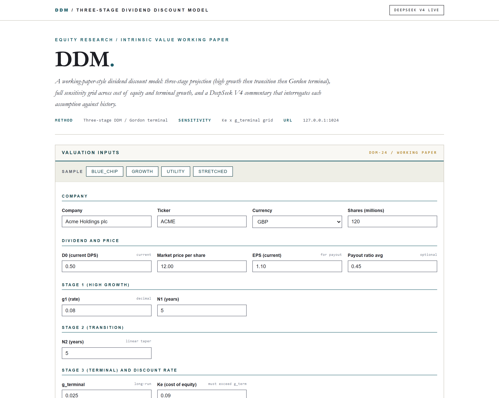
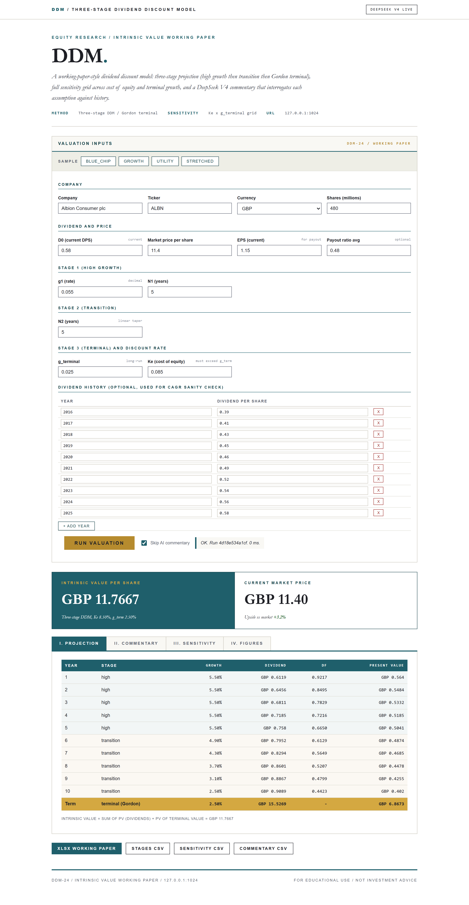
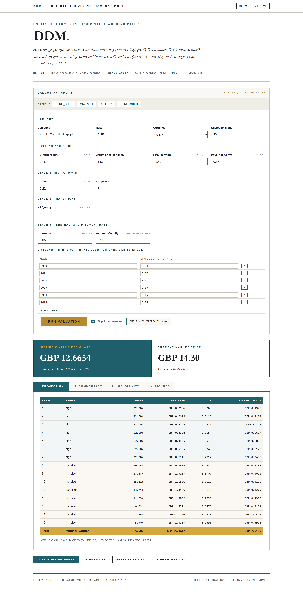
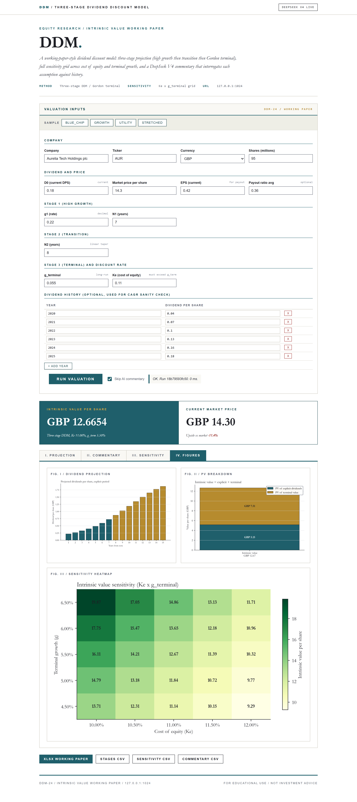

About the project
High growth + transition + Gordon terminal. AI interrogates each assumption against the dividend history.
A small Flask app and CLI that runs a three-stage dividend discount model on a company, builds a Ke x g_terminal sensitivity grid, and lets DeepSeek V4 write the working-paper commentary that interrogates each assumption.
At a glance
- Use case
- Equity-research intrinsic-value working paper, dividend stock valuation
- Inputs
- D0, growth (g1, N1, N2, g_term), Ke, optional dividend history + EPS
- Outputs
- Intrinsic per share + projection + 5x5 Ke x g_term sensitivity + Excel + 3 CSVs
- Model
- Single DeepSeek call (~$0.00025 per run)
How it works
- DDM schema. ddm_schema.py wraps the inputs in a DdmInput dataclass plus DividendHistory sub-records.
- DDM maths. ddm_maths.compute builds the projection year by year.
- AI commentary. ddm_ai.commentary builds a digest of the projection, the stage-by-stage growth, intrinsic, terminal value, and historical CAGR.
- Buffett-letter UI. Distinct from every prior day's palette.
- Excel + CSV exports. openpyxl writes the multi-sheet workbook (Summary with embedded charts, Projection year by year with terminal row, Sensitivity grid, Commentary, Inputs).
AI integration
DeepSeek writes the working-paper commentary
Limitations
- Single-stock per run. Bulk portfolio valuation is out of scope.
- Linear-taper transition only. Real businesses do not transition linearly.
- Constant cost of equity. Ke moves with the equity risk premium and beta over time.
- DDM only, no FCFE. Free cash flow to equity is a related but separate model.
- AI proposes, does not opine. Every valuation needs review by an analyst before being acted on.
- Only GBP / USD / EUR accepted. Other currencies rejected at the schema.
Fun facts
- A three-stage dividend discount model: fast growth, a transition, then a steady state, the way real dividend payers actually mature.
- It pressure-tests each assumption against the company's own dividend history.
Walk-through
- Home page (cold start) - Buffett's-letter aesthetic. Warm white paper, deep teal, gold accents, Georgia / Garamond serif.
- First data run: mature blue-chip dividend payer - Blue-chip sample. Eight years of dividend growth around 4 to 5 percent, modest Ke.
- Second data run: stretched aggressive assumptions - Stretched sample. 22 percent g1, 5.5 percent terminal growth.
- Figures tab (what the Excel export embeds) - Three charts: dividend projection (years 1 to N1+N2 plus terminal); PV breakdown (explicit vs terminal); sensitivity...
- AI commentary (the integration) - DeepSeek V4 reads the projection digest and writes the working-paper commentary: assumption review block by block,...
Screenshots



